Key Achievements
GenAIoT Programme Scholar
Participated in the GenAIoT Programme at the Department of Electrical Engineering, City University of Hong Kong, exploring how generative AI and Internet of Things technologies can work together in real-world settings. Developed ideas for smart city applications, connecting an interest in Python and AI with the possibilities of connected devices. The programme broadened my perspective beyond standalone software and encouraged me to think about how intelligent systems can respond to everyday needs.
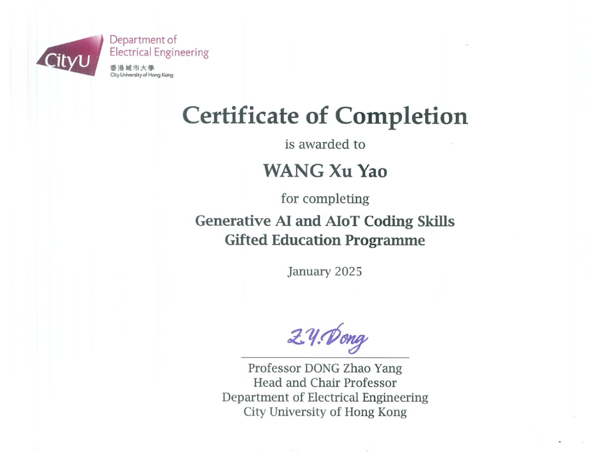
International Olympiad in Artificial Intelligence
Selected as one of four team members to represent Hong Kong at the International Olympiad in Artificial Intelligence, competing alongside teams from around the world. Tackled challenges involving computer vision, natural language processing, and reinforcement learning, applying AI knowledge to practical problems in a competitive setting. The experience reinforced the importance of careful analysis, experimentation, and teamwork, while motivating me to keep developing a deeper understanding of machine learning.
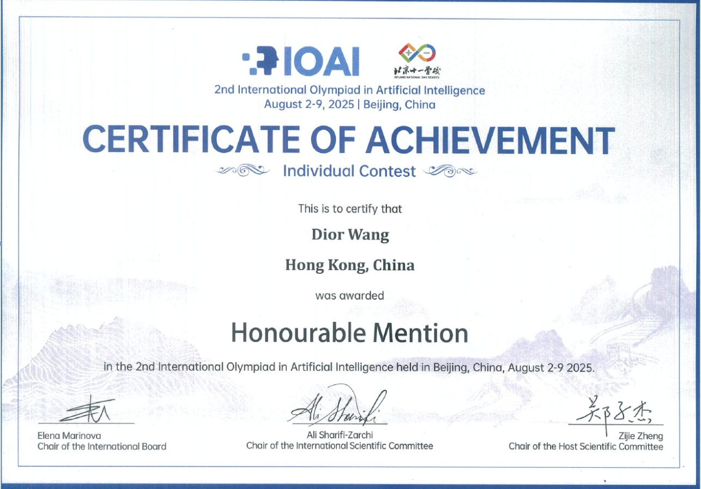
School Drama Club Member
Performed in school productions, developing improvisation, character interpretation, and stage presence through rehearsal and performance. Received three Dramatic Duo awards at the Hong Kong Speech Festival. Working with scene partners and fellow performers taught me to listen closely, respond to others, and approach a story from different perspectives. Drama gives me a creative outlet beyond programming and strengthens the communication and collaboration skills I bring to technical projects.
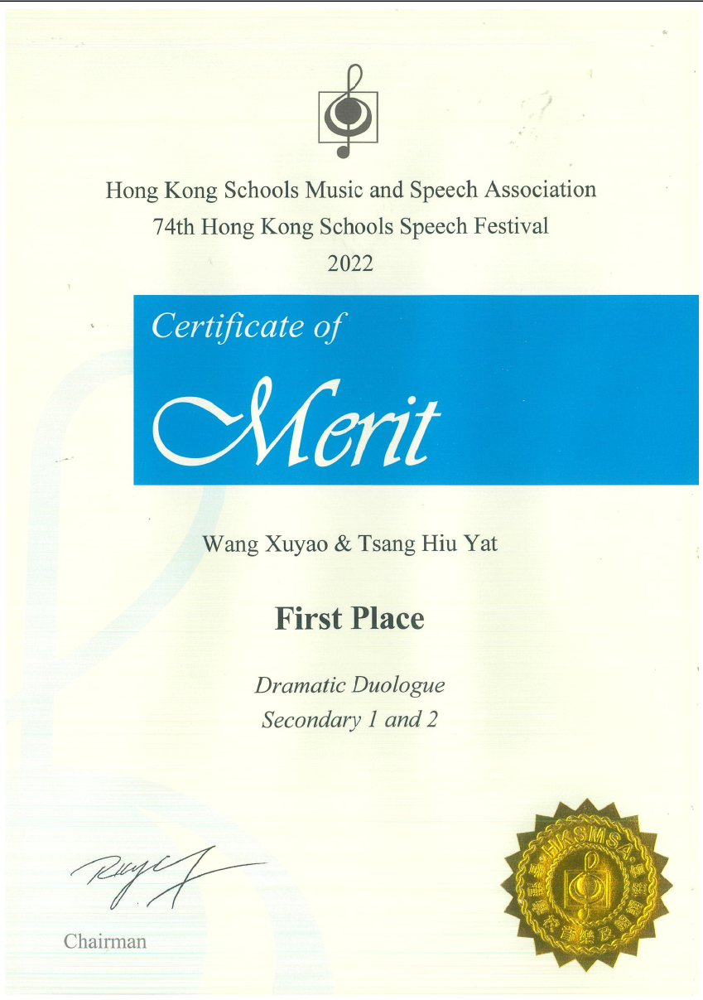

HackMIT China 2026 Education Track Team Leader
Led our Education Track team at HackMIT China 2026 and co-developed WashPal, a handwashing system designed for children. The project combines OpenCV and Raspberry Pi to assess handwashing technique and provide real-time feedback, with the aim of making hygiene education more interactive. Bringing together computer vision, physical hardware, and an educational use case, WashPal gave us an opportunity to turn an everyday need into a demonstrable prototype within a hackathon setting.
Maker Faire Shenzhen & Maker Faire Tokyo Exhibitor
Exhibited GUIDE technology projects at Maker Faire Tokyo and Maker Faire Shenzhen, sharing project ideas and demonstrating the technology to visitors. Presenting to people with different backgrounds challenged me to explain technical concepts clearly and connect each demonstration to its practical purpose. These exhibitions offered a chance to step beyond development, exchange ideas with makers and the public, and think more carefully about how people encounter and understand a technology project.
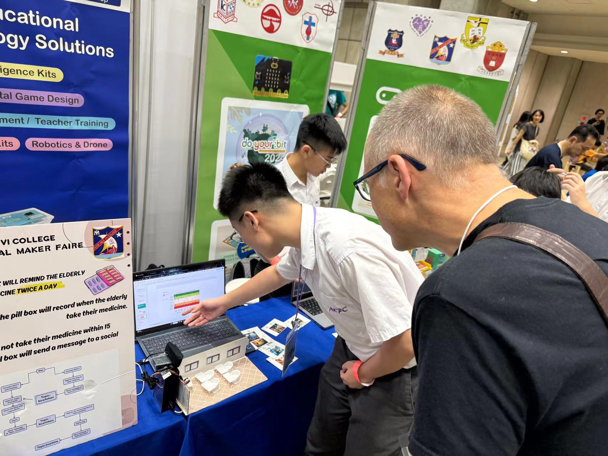
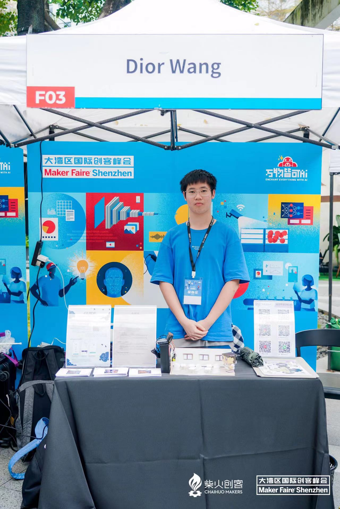
International Special Award — OCIP, iCAN 2025
Received an International Special Award from OCIP at iCAN 2025, adding an international recognition to my experience in innovation projects. For me, the award is encouragement to keep exploring technical ideas and turning them into practical work. It also serves as a reminder to balance creativity with usefulness as I continue developing projects and looking for meaningful problems to solve.
International Special Award — Eurobusiness & Haller Pro Inventio Foundation, iCAN 2025
Received an International Special Award from the Eurobusiness & Haller Pro Inventio Foundation at iCAN 2025.
HackMIT China 2026 First Place in the Education Track
Won first place in the Education Track at HackMIT China 2026.
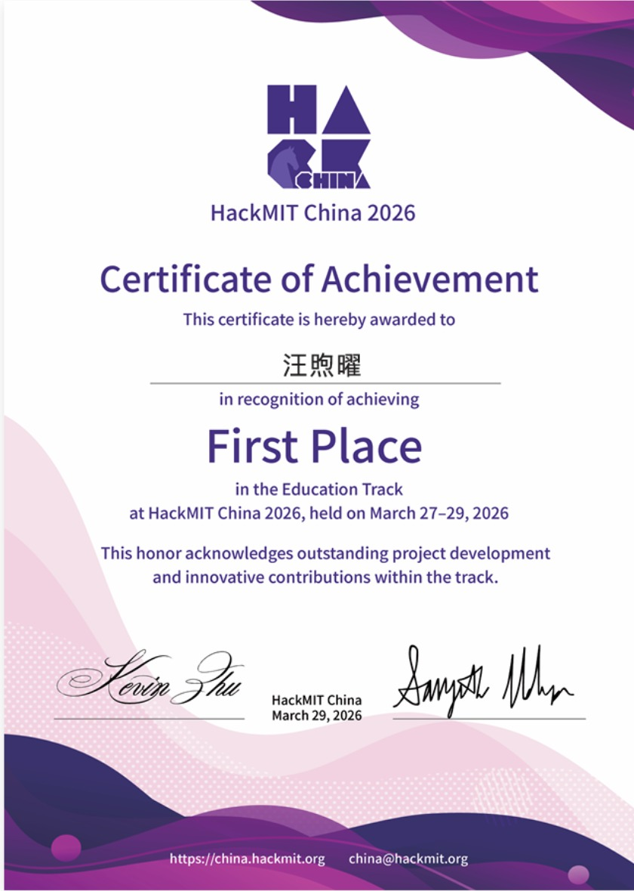
HackMIT China 2026 Third Place in the Overall Category
Won third place in the Overall Category at HackMIT China 2026.
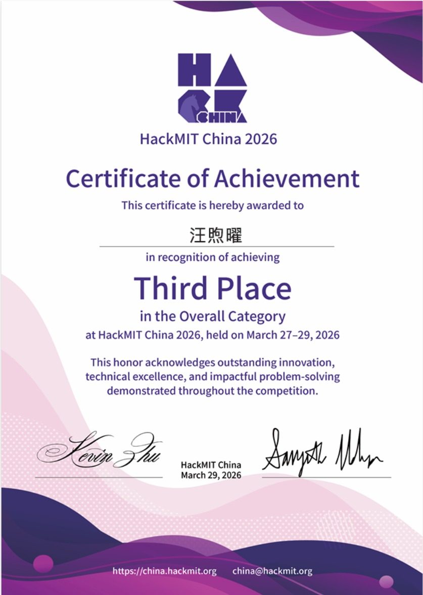
Third Prize, Smart Campus Project Contest
Received third prize in the Smart Campus Project Contest, part of the Smart Campus x InnoTech Taster Program 2024.

Yale International Relations Camp Certificate
Completed the Yale International Relations Camp in Hong Kong, organized by the Yale International Relations Association.
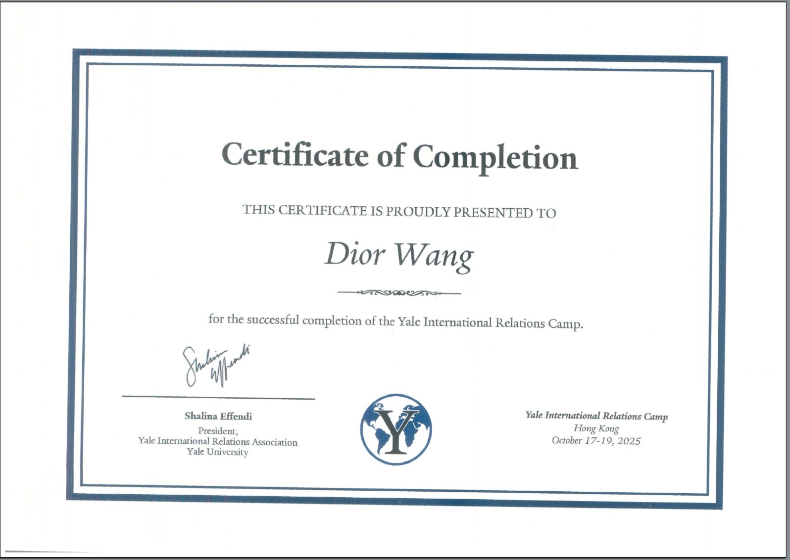
Intelligent Robotics Course Certificate
Completed a course in assembling and programming an intelligent robot.
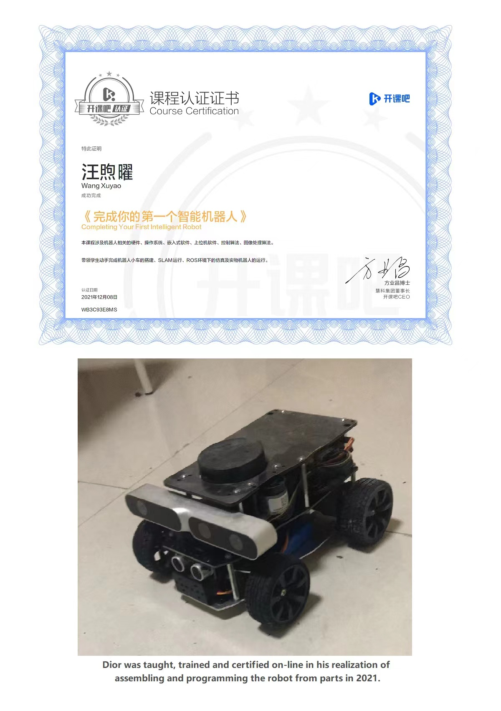
Business Intelligence Course Certificate
Completed the Competitive Capacity Enhancement course in Business Intelligence.
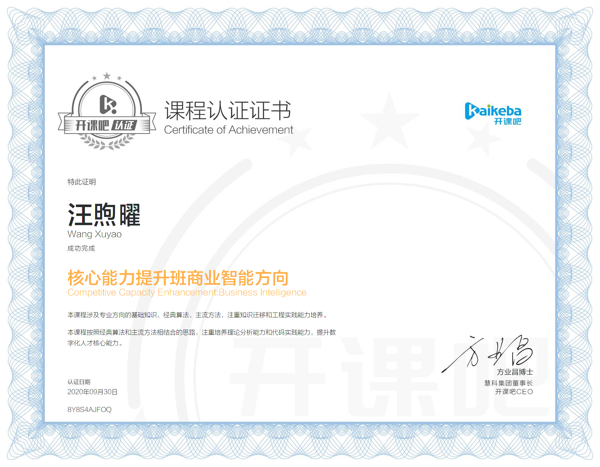
Python Grammar and Web Scraping Analysis Course Certificate
Completed the Python Grammar and Web Scraping Analysis course.

2022 Open Data Hackathon Smart Property — Best of Tech Award
Received the Best of Tech Award in the Secondary Stream of the 2022 Open Data Hackathon Smart Property competition.
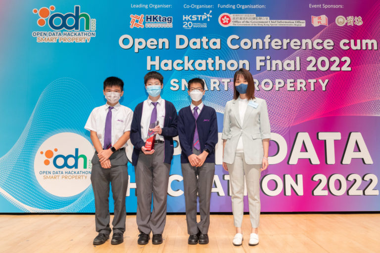
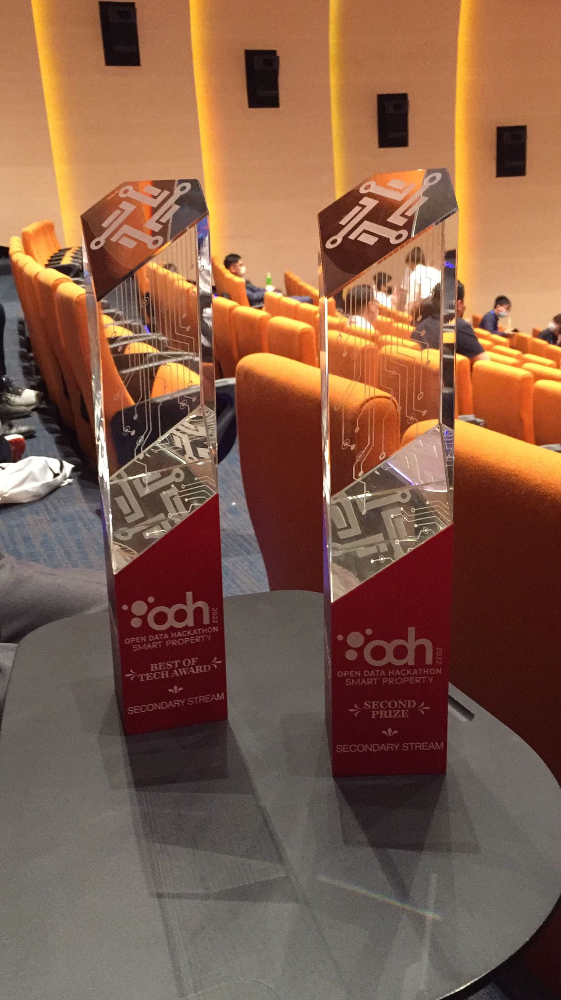
2022 Open Data Hackathon Smart Property — Second Prize
Won Second Prize in the Secondary Stream of the 2022 Open Data Hackathon Smart Property competition.
Preface Nomad Awards 2024 Tech Competition Second Runner-Up
Received Second Runner-Up in the Preface Nomad Awards Tech Competition 2024.
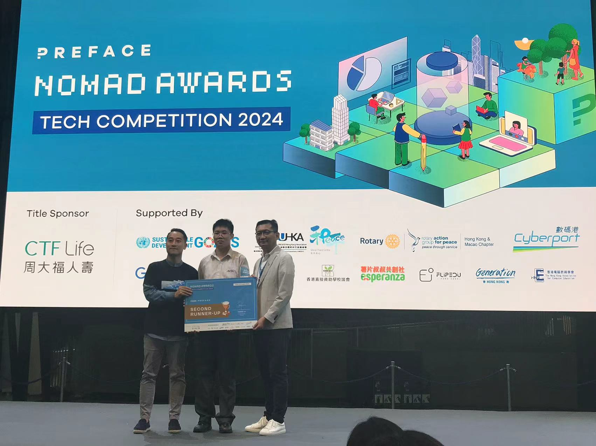